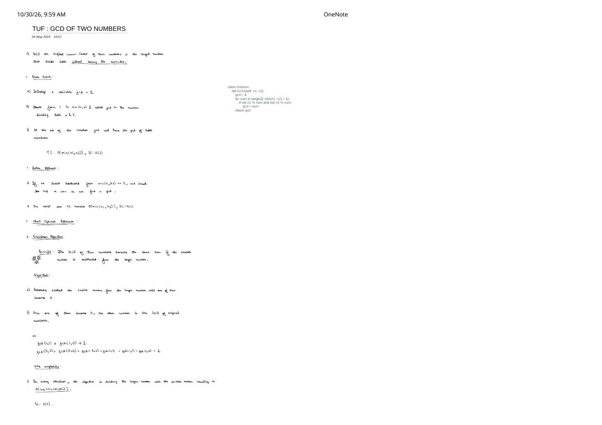

GCD of Two Numbers: Brute Scan, Backward Break & the $\mathcal{O}(\log(\min(n_1, n_2)))$ Euclidean Algorithm
Expanded from handwritten competitive coding study note: 03_TUF_GCD_OF_TWO_NUMBERS.pdf (2 pages)
1. Problem Statement & Definition
Given two non-negative integers $n_1$ and $n_2$ (not both zero), compute their Greatest Common Divisor (GCD)—also called the Highest Common Factor (HCF): the largest positive integer $g$ that divides both $n_1$ and $n_2$ without leaving a remainder ($g \mid n_1$ and $g \mid n_2$).
2. Brute Force vs. Backward Scan ("Better Approach")
Notice first that no divisor of a positive integer $x$ can exceed $x$. Hence $\gcd(n_1, n_2) \le \min(n_1, n_2)$ for $n_1, n_2 \ge 1$. Page 1 of 03_TUF_GCD_OF_TWO_NUMBERS.pdf contrasts two linear-scan variants:
- Brute Force — Forward Scan $2 \to \min(n_1, n_2)$: Initialize
gcd = 1, iteratenumfrom $2$ up to $\min(n_1, n_2)$, and overwritegcd = numwhenevern1 % num == 0 and n2 % num == 0. Always runs $\min(n_1, n_2) - 1$ iterations regardless of the answer. - Better Approach — Backward Scan $\min(n_1, n_2) \to 1$ with Early
break: Iterate downward from $\min(n_1, n_2)$ to $1$ andbreakon the first common divisor found!- Best case: $\mathcal{O}(1)$ when one input divides the other (e.g., $\gcd(15, 45) = 15$ stops on the very first check!).
- Worst case (Highlighted on Page 1): Still $\mathcal{O}(\min(n_1, n_2))$! Whenever $n_1$ and $n_2$ are coprime ($\gcd = 1$, such as $\gcd(10^9, 10^9 - 1) = 1$), the backward loop must walk all the way down to $1$, performing $10^9$ divisions!
# Brute-force & Backward-scan Python snippets from Page 1 of 03_TUF_GCD_OF_TWO_NUMBERS.pdf
class Solution:
def GCD_brute(self, n1: int, n2: int) -> int:
gcd = 1
for num in range(2, min(n1, n2) + 1):
if not n1 % num and not n2 % num:
gcd = num
return gcd
def GCD_backward(self, n1: int, n2: int) -> int:
for num in range(min(n1, n2), 0, -1):
if n1 % num == 0 and n2 % num == 0:
return num
return 13. Most Optimal: The Euclidean Algorithm (Subtraction $\to$ Modulo)
Euclid's algorithm eliminates linear scanning completely via one invariant:
Euclid's Subtraction Principle & Modulo Upgrade
Principle: For $a \ge b \gt 0$, the GCD of two numbers remains unchanged when the smaller number is subtracted from the larger: $\gcd(a, b) = \gcd(a - b, b)$. Why? If $d \mid a$ and $d \mid b$, then $d \mid (a - b)$; conversely, if $d \mid (a - b)$ and $d \mid b$, then $d \mid \bigl((a - b) + b\bigr) = a$. Both pairs share the exact same set of common divisors!
Look at the two handwritten subtraction traces at the bottom of Page 1:
- Trace 1: $\gcd(1, 1) \longrightarrow \gcd(1 - 1, 1) = \gcd(0, 1) \longrightarrow \mathbf{1}$.
- Trace 2: $\gcd(7, 2) = \gcd(5, 2) = \gcd(3, 2) = \gcd(1, 2) = \gcd(1, 1) = \gcd(1, 0) = \mathbf{1}$.
Watch the chain $7 \to 5 \to 3 \to 1$: subtracting $2$ repeatedly until the result drops below $2$ is literally the definition of the modulo remainder $7 \bmod 2 = 1$! If $a = 10^9$ and $b = 2$, pure subtraction takes $5 \times 10^8$ steps, whereas one modulo step jumps straight to $a \bmod b$:
4. Page 2 Core Fact: Why Does $\gcd(a, 0) = a$ and $\gcd(0, b) = b$?
Page 2 of 03_TUF_GCD_OF_TWO_NUMBERS.pdf dedicates a standalone note to why stopping when one argument hits $0$ and returning the other is mathematically exact (not just a coding hack):
Four-Line Proof of $\gcd(a, 0) = a$ ($a \gt 0$)
- Definition: $\gcd(a, 0)$ means the largest positive integer that divides both $a$ and $0$.
- Every integer divides $0$: Since $0 = d \times 0$ for every non-zero integer $d$, we have $d \mid 0$ universally!
- Set Intersection: Because $0$ imposes zero restriction on $d$, the common divisors of $\{a, 0\}$ are exactly the divisors of $a$.
- Maximum Element: Among all divisors of $a \gt 0$, the largest one is $a$ itself $\implies \gcd(a, 0) = a$ (and symmetrically $\gcd(0, b) = b$).
5. Clean C++ & Python Implementations
// GCD of Two Numbers — Optimal Iterative & Recursive Euclidean Algorithm
// Time Complexity: O(log(min(a, b))) | Space Complexity: O(1) iterative
#include <cstdlib>
#include <numeric> // std::gcd in C++17+
#include <utility>
using namespace std;
class Solution {
public:
// Iterative O(1)-space Euclidean GCD (recommended for production / contests)
long long gcdIterative(long long a, long long b) {
a = llabs(a);
b = llabs(b);
while (b != 0) {
a %= b;
swap(a, b);
}
return a; // Handles gcd(a, 0) = a and gcd(0, b) = b automatically!
}
// Compact recursive one-liner
long long gcdRecursive(long long a, long long b) {
return b == 0 ? a : gcdRecursive(b, a % b);
}
};import math
class Solution:
def GCD(self, n1: int, n2: int) -> int:
a, b = abs(n1), abs(n2)
while b != 0:
a, b = b, a % b
return a # Equivalent to math.gcd(n1, n2)6. Complexity Proof & Key Edge Cases
- Time Complexity Proof — $\mathcal{O}(\log(\min(n_1, n_2)))$: Suppose $a \ge b \gt 0$ and let $r = a \bmod b$.
- Case 1 ($b \le a / 2$): Since $r \lt b$, immediately $r \lt a / 2$.
- Case 2 ($b \gt a / 2$): Quotient $\lfloor a / b \rfloor = 1$, so $r = a - b \lt a - a / 2 = a / 2$.
- Space Complexity — $\mathcal{O}(1)$ iterative ($\mathcal{O}(\log(\min(n_1, n_2)))$ call-stack frames if written recursively).
- Key Edge Cases:
- When $a \lt b$ initially (e.g.
gcd(2, 7)): You do not need anif (a < b) swap(a, b);check before the loop! On iteration 1, $2 \bmod 7 = 2$, andswap(a, b)turns $(2, 7)$ into $(7, 2)$ automatically in one step! - Zero inputs:
gcd(0, 7)swaps to(7, 0)and returns7;gcd(7, 0)skips the loop and returns7.
- When $a \lt b$ initially (e.g.
From the Handwritten Notes
View original handwritten page 1 — 03_TUF_GCD_OF_TWO_NUMBERS.pdf (Brute, Backward Break & Euclidean Subtraction Traces)


03_TUF_GCD_OF_TWO_NUMBERS.pdf Page 1: Forward $\mathcal{O}(\min(n_1, n_2))$ loop, backward break, Euclidean subtraction traces $\gcd(1,1) \to 1$ & $\gcd(7,2) \to 1$, and $\mathcal{O}(\log(\min(n_1, n_2)))$ bound.